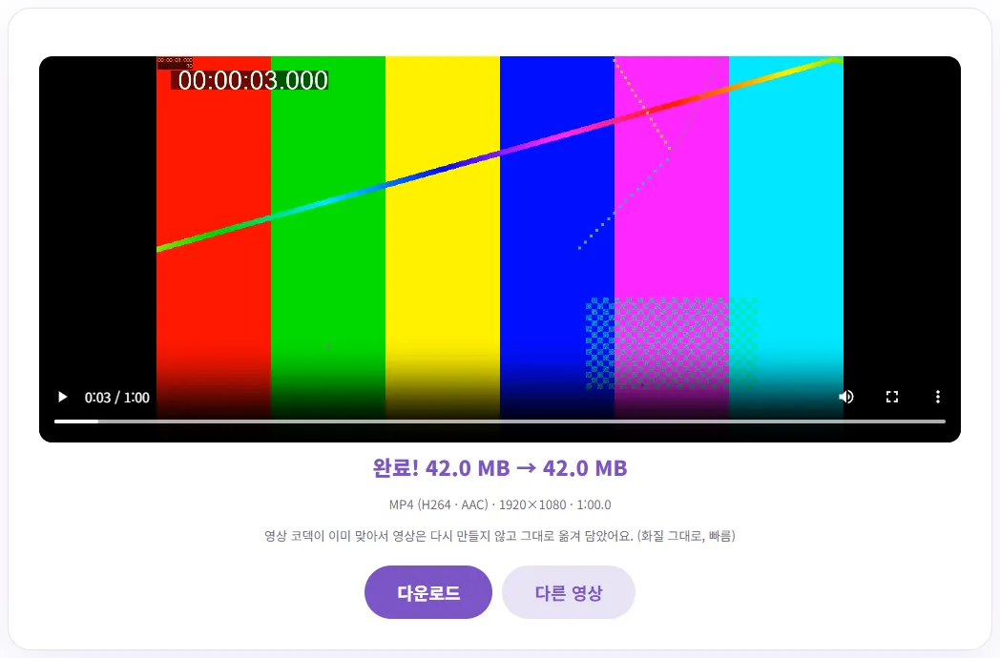
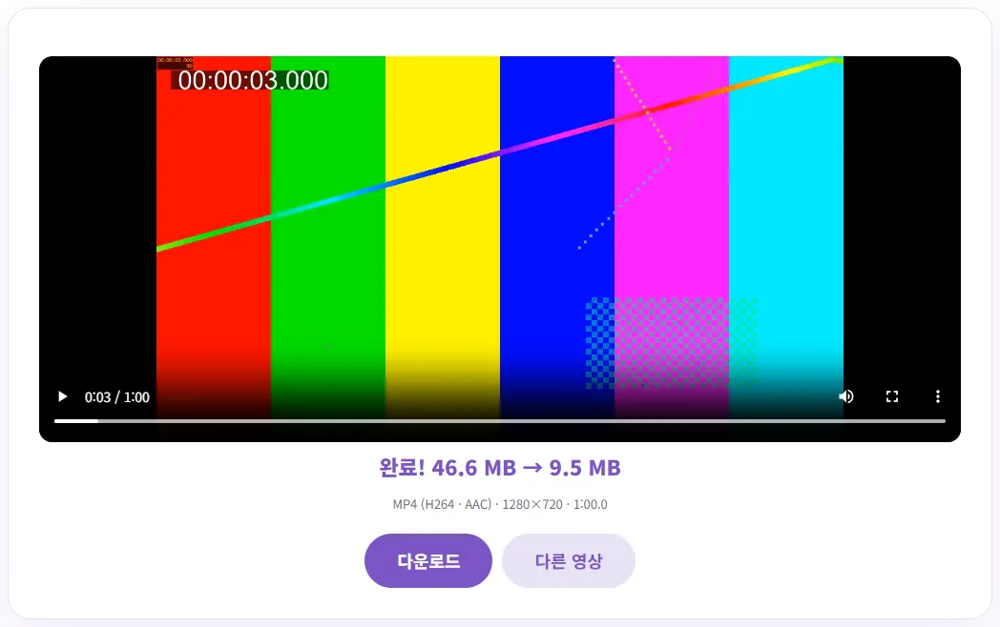

아이폰 MOV 영상, MP4로 어떻게 바꿀까요?
아이폰으로 찍은 영상을 PC로 옮겼더니 재생이 안 되거나, 사이트에 올리려는데 'MP4만 가능'이라고 나와 막히셨죠? 이 글에서는 왜 그런지부터, 화질 그대로 몇 초 만에 바꾸는 경우와 시간이 걸리는 경우를 구분해서, 용량까지 줄이는 방법을 직접 해 본 숫자로 알려 드릴게요.
MOV가 안 열리는 진짜 이유: 껍데기와 내용물
동영상 파일은 '껍데기(컨테이너)' 안에 '압축된 영상과 소리(코덱)'가 들어 있는 구조예요. MOV와 MP4는 껍데기 이름이고, 그 안의 영상은 H.264나 HEVC(H.265) 같은 코덱으로 압축돼 있어요. 아이폰 영상은 보통 파일 이름 끝이 .MOV인데, 안 열리는 원인은 대부분 껍데기보다 안에 든 코덱이에요.
애플 지원 문서에 따르면 아이폰 7 이후 모델은 iOS 11부터 동영상을 HEVC로 찍을 수 있고, HEVC는 H.264보다 압축률이 높아서 같은 화질을 더 적은 용량으로 저장해요. 문제는 HEVC를 바로 못 읽는 곳이 있다는 거예요. 마이크로소프트 도움말은 윈도우에서 재생이 안 되는 형식은 많은 경우 마이크로소프트 스토어의 코덱 확장(HEVC 등)을 설치해 지원을 추가할 수 있다고 안내하고 있어요. 확장이 없는 PC, 오래된 기기, 일부 업로드 사이트에서는 HEVC 영상이 안 열리거나 소리만 나올 수 있어요.
| 아이폰 카메라 포맷 설정 | 동영상 코덱 | MP4로 바꿀 때 |
|---|---|---|
| 고효율성 (기본) | HEVC | 다시 인코딩 필요 → 몇 분 걸림 |
| 높은 호환성 | H.264 | 옮겨 담기만 → 몇 초 |
애플 문서에 나온 대로 '설정 > 카메라 > 포맷'에서 '높은 호환성'을 고르면 그다음부터 찍는 동영상은 H.264로 저장돼요. 대신 용량이 더 커지고, 이미 찍은 영상은 바뀌지 않아요. 사진 쪽 이야기는 아이폰 사진(HEIC)이 PC에서 안 열릴 때에 정리해 두었어요.
벤토툴로 MOV를 MP4로 바꾸기
- 동영상 형식 변환을 열고, '바꿀 형식'은 MP4(H.264·AAC), '해상도'는 원본 그대로 두세요.
- MOV 파일을 올리면 바로 변환을 시작해요. 처음 한 번은 변환 엔진(약 9MB)을 내려받아요.
- 끝날 때까지 탭을 열어 두고, 완료되면 결과 영상을 재생해 본 뒤 '다운로드'를 누르세요.
도구가 영상 코덱을 먼저 확인해서, 이미 H.264면 다시 만들지 않고 MP4 껍데기로 옮겨 담기만 해요. HEVC면 어디서나 열리는 H.264로 새로 만들어요. 직접 고를 필요 없이 알아서 정해져요.
코덱이 맞으면 몇 초 만에 끝나는 '옮겨 담기'
H.264로 찍은 1분짜리 1080p MOV(42.0MB)를 넣어 보니 2.5~3초 만에 끝났어요. 용량은 42.0MB 그대로, 해상도 1920×1080, 길이 1분 그대로였고, '영상 코덱이 이미 맞아서 그대로 옮겨 담았어요'라는 안내가 떴어요. 영상을 다시 압축하지 않았으니 화질 손실도 없어요.

HEVC 영상은 다시 인코딩, 시간이 걸려요
아이폰 기본 설정과 같은 HEVC 코덱으로 만든 1분짜리 1080p MOV(46.6MB)는 사정이 달라요. 영상을 H.264로 새로 만들어야 해서 원본 해상도 그대로는 약 3분(185초)이 걸렸고, 결과는 33.0MB였어요. 해상도를 720p로 고르니 약 1분 50초 만에 끝났고 9.5MB가 됐어요.

이 도구는 브라우저 안에서 한 줄(단일 스레드)로 처리해서 설치형 프로그램보다 느려요. 도구 안내 기준으로 1분 영상에 720p는 약 1분 반, 1080p는 약 3분이고, 노트북이나 휴대폰은 더 걸릴 수 있어요. 변환하는 동안 탭을 닫지 마세요. 참고로 이 숫자는 컴퓨터로 만든 색 막대 테스트 영상으로 잰 값이라, 실제 촬영 영상은 결과 용량이 다를 수 있어요.
바꾼 뒤 꼭 확인할 것
- 정보 줄 보기: 완료 화면의 'MP4 (H264 · AAC) · 해상도 · 길이' 줄에서 H264가 보이면 어디서나 열리는 형식이에요. 길이가 원본과 같은지도 함께 보세요.
- 올릴 곳에서 한 번 열어 보기: 받은 파일을 실제로 쓸 PC 플레이어나 업로드 사이트에 먼저 올려 보세요. 안 열리던 원인이 코덱이었다면 이제 열려야 해요.
- 원본 MOV는 지우지 마세요: 다시 인코딩한 MP4는 원본보다 화질이 조금 낮아질 수 있어요. 나중에 다시 편집할 일을 생각해서 원본은 남겨 두세요.
맥이 있다면 애플 문서에 나온 방법도 있어요. QuickTime Player에서 HEVC 비디오를 열고 '파일 > 다음으로 내보내기'를 고른 뒤, '더 작은 파일 크기(HEVC)'를 '더 향상된 호환성(H.264)'으로 바꿔 저장하면 돼요.
용량도 줄이고 싶다면: 압축 도구와 비교
카톡이나 메일로 보내려고 용량을 크게 줄이고 싶다면 두 가지 방법이 있어요.
| 방법 | 같은 HEVC 1분 영상 결과 | 특징 |
|---|---|---|
| 형식 변환에서 해상도 720p | 46.6MB → 9.5MB, 약 1분 50초 | MP4(H.264) 형식이 확실하게 나와요. 탭을 다른 데로 옮겨도 계속돼요. |
| 동영상 용량 줄이기 720p·보통 | 46.6MB → 8.4~9.1MB, 약 1분 | 영상을 한 번 재생하면서 다시 녹화해서 영상 길이만큼 걸려요. 압축하는 동안 탭을 화면에 켜 둬야 해요. |
용량 줄이기 도구는 실시간으로 다시 녹화하는 방식이라 같은 영상도 할 때마다 결과 용량이 조금씩 달랐어요(두 번 해서 8.4MB, 9.1MB). 이 도구는 브라우저가 직접 재생할 수 있는 영상만 처리할 수 있는데, 테스트한 PC의 크롬은 HEVC MOV를 재생할 수 있어서 바로 됐어요. 브라우저가 HEVC를 재생하지 못하는 환경이라면 형식 변환 도구로 먼저 MP4로 바꾼 뒤 줄이세요. 긴 영상은 먼저 필요한 부분만 남기면 시간과 용량이 함께 줄어요. 자르는 법은 앱 설치 없이 동영상 앞뒤 자르기를 보세요.
500MB가 넘으면 경고가 뜨는 이유
형식 변환은 서버가 아니라 내 브라우저 안에서 돌아가요. 영상이 어디로도 올라가지 않는 대신, 브라우저가 쓸 수 있는 메모리 안에서 처리해야 해서 너무 큰 영상은 중간에 실패할 수 있어요. 도구 안내에 따르면 메모리 16GB PC의 크롬에서 1.1GB 영상은 됐지만 2GB 영상은 메모리 부족으로 실패했어요. 메모리가 적은 기기를 고려해서 500MB가 넘으면 미리 경고를 보여 줘요.
- 경고가 떠도 바로 실패하는 건 아니에요. 다른 탭을 닫고 한 번 시도해 보세요.
- 실패하면 동영상 자르기로 몇 부분으로 나눈 뒤 하나씩 바꾸세요.
- 아이폰에 원본이 남아 있다면 USB로 옮기는 방법도 있어요. 애플 문서에 따르면 USB로 PC에 가져올 때 HEVC 영상이 H.264로 변환될 수 있고, 변환을 막는 설정이 '설정 > 앱 > 사진'의 '원본 유지'예요. HEVC 그대로 넘어온다면 이 항목이 켜져 있지 않은지 확인해 보세요.